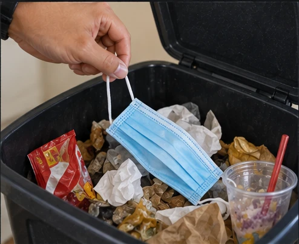

Tapos na sa iyo.
Hindi pa
sa mundo.
A used mask leaves your home. Its impact does not stop there. Let’s understand what happens next, and who carries the risk.
Understand the issueA student advocacy for people and the places we share.
Tapon nang tama. Protektado ang pamilya at komunidad.
Used PPE is not automatically infectious.
Contamination and
handling matter.
01 / Start with the everyday
Your bin is not
the end of the story.

Protection has
a next chapter.
PPE waste includes discarded masks, gloves, gowns, and face shields. It is only part of healthcare waste, not all of it.
We look at what happens after use in Philippine households and healthcare settings. The concern is not protection itself, but waste that is mixed, poorly handled, or released into the environment.
Where everyday choices meet local collection systems.
The people who handle what we leave behind.
The air, water, and habitats we all depend on.
The evidence points to gaps in segregation and waste-management systems, not only individual disposal choices (Tanchuling, 2021). WHO notes that poorly managed healthcare waste can expose handlers and communities to health risks (WHO, 2024). Research outside the Philippines has documented animals becoming entangled in or ingesting PPE litter (Hiemstra et al., 2021). Necessary protection still matters; the concern is how waste is managed after use.
Background: WHO, Health-care waste (2024) ↗
02 / A local signal
The issue is real.
The numbers
need context.
Good advocacy explains what a figure tells us, and what it cannot.
A Philippine study reported masks and other medical waste being disposed of with municipal waste.
Pandemic-era finding · Reported in 2021What this number does and does not mean
This finding comes from a pandemic-era study published in 2021; the published source does not state the exact data-collection dates or the number of participating LGUs. It describes the LGUs in that study, not every LGU in the Philippines, and is not a current national PPE-waste total.
THREE PARTNER HOSPITALS · AUDIT PERIOD: JULY–EARLY SEPTEMBER 2025
Plastic was 77%, 78%, and 84% of audited waste
At Cagayan Valley Medical Center, Eastern Visayas Medical Center, and Quirino Memorial Medical Center, respectively. The findings were presented on January 13–15, 2026.
These are shares of total audited waste, including non-medical plastics, not daily kilograms or PPE-only totals. The public summaries do not specify exact sample days, audit duration, or whether the percentages are by weight, volume, or item count.
Audit period · BAN Toxics, 2025 ↗
Results · DENR-FASPS, 2026 ↗
Tanchuling, PATLEPAM News (2021), page 2 ↗
Published by EMB-DENR.
Necessary protection.
Shared responsibility for what comes
next.